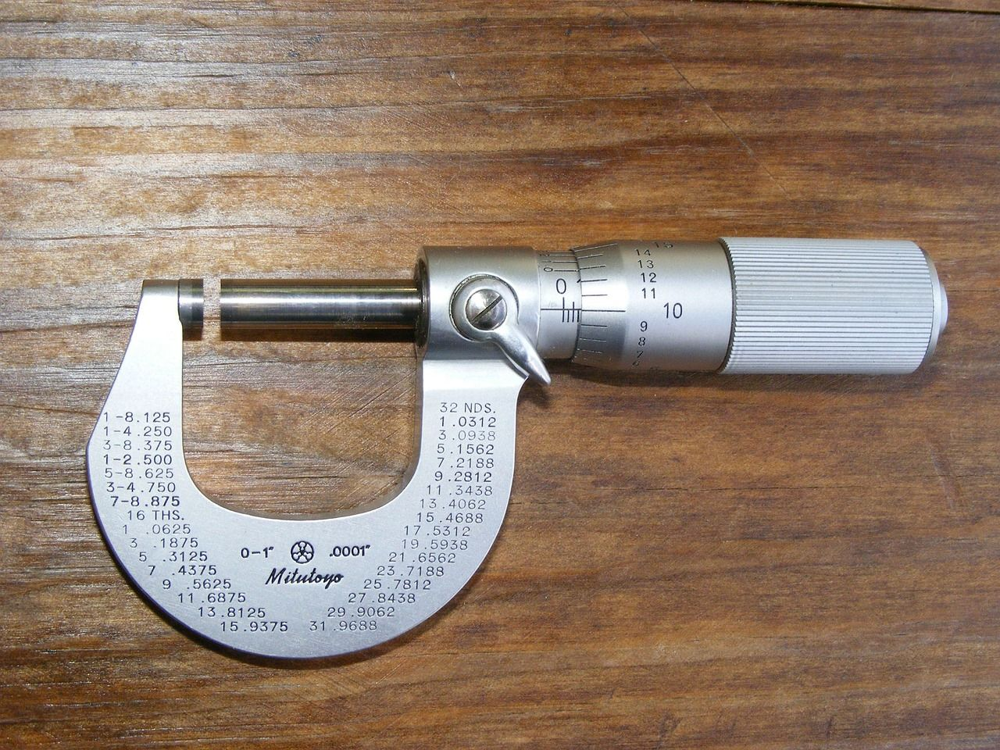
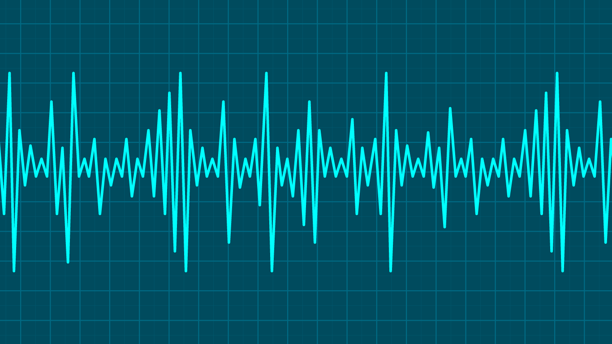
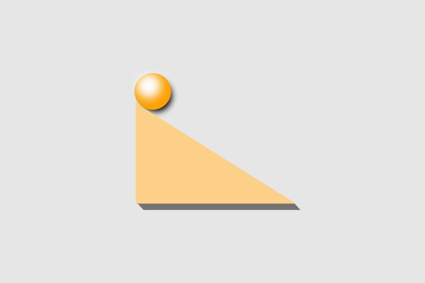
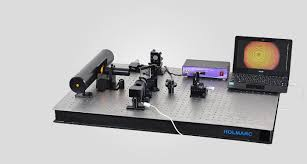

Virtual Lab ITB
Muhammad Kevinza Faiz
mahasiswa
view profile
login
register
Muhammad Kevinza Faiz
student
view profile
home
mata kuliah
contact us
playlist details
save playlist
6 videos
Laboratorium Fisika Dasar ITB
author
Fisika Playlist
Fitur ini dibuat untuk mahasiswa dapat memahami konsep praktikum fisika melalui video yang tersedia
22-10-2024
playlist videos

Pengukuran dan Ketidakpastian
Usaha dan Energi
Momentum Tumbukan

Gelombang Berdiri

Gerak Menggelinding

Interferometer